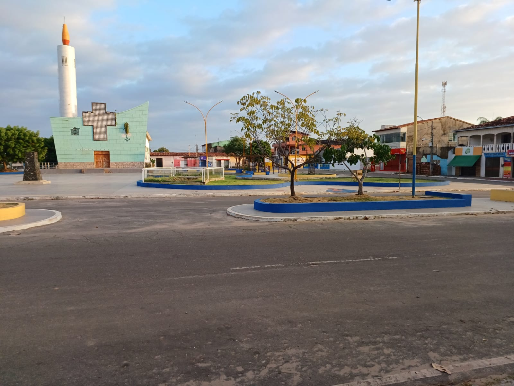

"ser ou não ser, eis a questão"
Muitos moradores que fixaram moradias inicialmente em Penalva não nasceram aqui, mas que vieram para cá atraídos pelo solo fértil e à procura de riquezas naturais, a exemplo dos nossos colonizadores portugueses.Os padres Jesuitas pertencentes a Companhia de Jesus estiveram na região a partir de 1700, vieram até aqui para catequizar os índios gamelas.E mais tarde os colonos que estavam estabelecidos no povoado São Brás vieram fazer a povoação.
Vamos citar alguns fatos relacionados à história política de Penalva: O Cavour Maciel, nasceu em São Luiz Gonzaga, o bom velhinho, foi prefeito, homem generoso a ponta de sair de casa em casa à noite medicando e visitando doentes à luz de uma lamparina com os bolsos cheios de remédios exercendo um verdadeiro trabalho filantrópico. Roberto Mendes, apesar de não ter nascido aqui, é filho do penalvense Jorge Mendes e neto do Bento Mendes. José Duarte Gonçalves, natural de São Luís, foi prefeito de Penalva e durante o seu governo a cidade teve relevante progresso.Trouxe o Hospital Jesus de Nazaré, Caema, fez o calçamento das principais ruas do centro da cidade e conseguiu muitas nomeações para diversas professoras junto ao então governador do Estado Nunes Freire, do qual usufruia de grande amizade, além de outras conquistas para Penalva de muita valia.
A história política de Penalva, não foi feita somente por pessoas que nasceram nesta cidade, mas, também, por muitos que caíram na simpatia popular e deixaram seus legados como legítimos filhos de Penalva. Alguns prefeitos eleitos pelo povo que não nasceram em Penalva: Roberto Mendes(1993-1996); Cavour Maciel (1956-1960); Zé Gonçalves (1973-1976); Zé Gonçalves (1983-1988); Vale ressaltar que, teve também, vereadores eleitos pelo povo que também não nasceram aqui, como: Zé Maia, Tomaz de Aquino, Doroteu Ricardo Viegas, Edgerson Brito, Mairi Gonçalves, Abimael Lopes, Natália Rodrigues, Silvano Sousa, Samuel Veloso, Natália Rodrigues, Pierre Teixeira, além de outros. Luana da Colônia atual vereadora vem fazendo a diferença, voltada para o social, foi a mais votada na última eleição com 900 votos.Conseguiu para o deputado Federal Wolmer Araújo, 1289 votos e se prepara para a reeleição com notável popularidade a ponto de ser reconhecida pelos analistas políticos como reeleita.
Entretanto, chamá-los de forasteiros, paraquedistas, seria externar ódio, usar termos pejorativos preconceituosos, que não cabem mais em nosso contexto social.E basta percorrermos aos anais da história política do Maranhão, lembraremos do paraibano Epitácio Cafeteira que adotou São Luís, foi prefeito, governador e ajudou muito o nosso estado a crescer.0 cearense Jackson Lago foi Prefeito de São Luís e governador. José Sarney foi político no Maranhão, Macapá e chegou até à presidência do Brasil.Alguém os chamaram de forasteiros? Não!
Henrique Guerra, homem de visão futurista, inteligente, sabe administrar, há mais de 7 anos ao lado de Ronildo Campos vem somando com suas experiências unindo o útil ao agradável.E coloca o seu nome a pré - candidato a prefeito de Penalva nas próximas eleições com grande aceitação do povo penalvense. Ademais, poderemos citar também exímios sacerdotes da história religiosa do nosso passado, como os Padres Batista e Cordeiro, os quais não nasceram aqui, mas evangelizaram como verdadeiros desbravadores fomentando a fé do nosso povo. Temos atuais pastores evangélicos que não nasceram também aqui; já no ramo empresarial, temos o Borel, natural de Matinha, escolheu Penalva para montar seu negócio ( farmácia ) e morar.O empresário Garros, natural de Vitória do Mearim, hoje administra a maior estrutura farmacêutica do município e emprega pessoas de Penalva. A recém inaugurada " Mais Farma", cujo proprietário é de Miranda do Norte, O Sacolão Paraíba, tanto emprega como ajuda a girar a nossa aconomia. O Bebeco, natural de Viana, também encontra-se estabelecido aqui.Donos de dezenas de óticas e consultórios odontológicos apostaram em nossa economia e estão inovando com seus serviços oferecidos à nossa população; o senhor de nome Marcelo, natural de Arapiraca, Alagoas, investiu aqui no ramo imobiliário como o "Residência Portal" na entrada da cidade já em fase de estruturação; proprietários de muitas lojas como o Paraiba, Casas Sampaio, Eletrolar, Nordestina, Eletromóveis Jesus, Magazine Vianense, Loja Manáh, A Credicampos Móveis, todas de empresários de outros lugares, mas estão também gerando empregos para os penalvenses. Portanto, a globalização e as nossas Leis, não impedem ninguém do direito de ir e vir, montar negócios ou candidatar-se em qualquer estado brasileiro, uma vez em dia com suas obrigações eleitorais. Os concursos públicos, dão direito a qualquer pessoa de se inscrever e morar em qualquer parte do Pais.Temos pessoas de outros lugares que aqui fizeram concursos, passaram e que estão aqui convivendo conosco.Ou, então, forasteiro não seria mais consistente pensar naquele que é seu vizinho, lhe conhece, mas não lhe olha seja para abrir um sorisso, ou um dar um bom dia e nem lhe ajuda quando pode? Portanto, nascer aqui ou não, tanto faz. Pai é o que cria e filho é o que ama, cuida e honra!